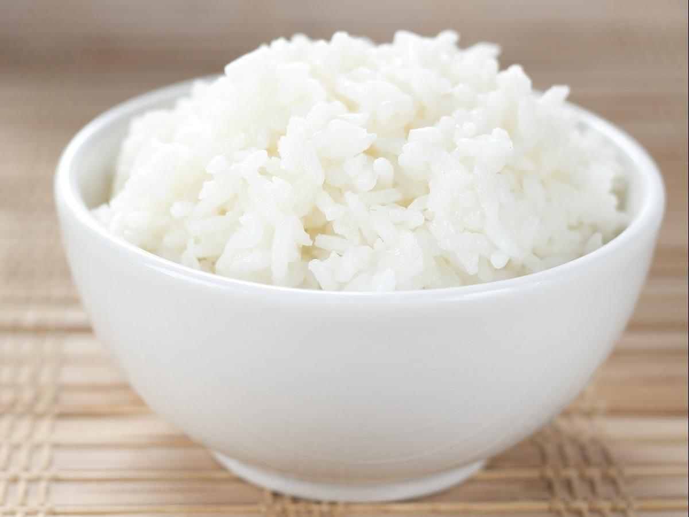

Steamed Rice

Description
Steamed rice is the perfect, easy side-dish for any meal!
Ingredients
Steps
- Wash 2 cups of white rice with water then drain.
- In a pot, add your rice and 4 cups of water.
- Cover and boil the rice at low heat for 15-20 minutes.
- Let the rice rest for 5 minutes.
- Done!